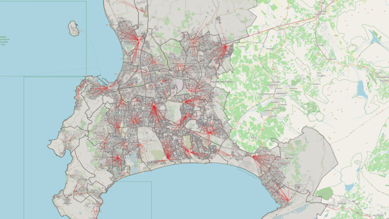
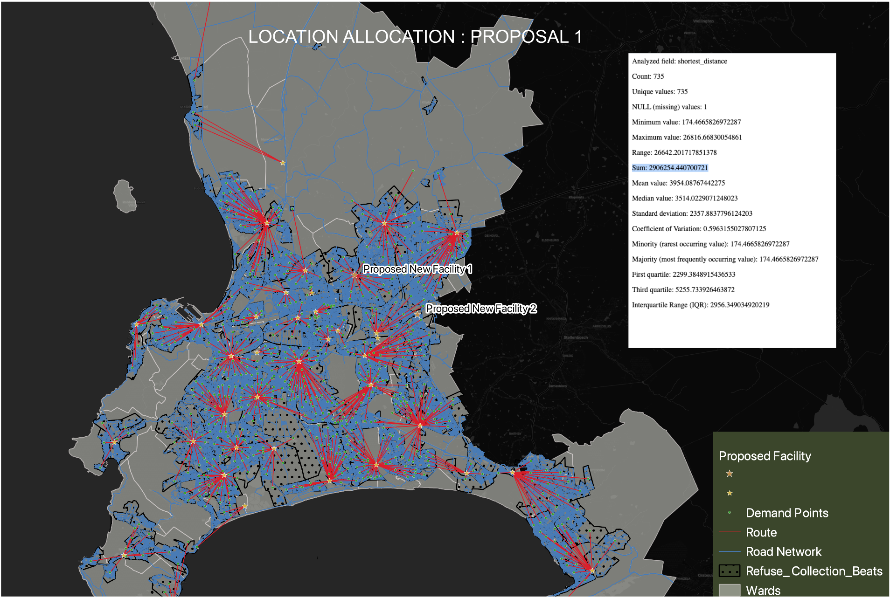
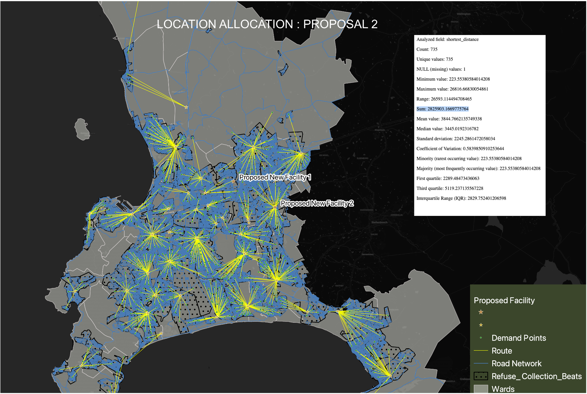

Überblick
Inspiriert von einem Blogbeitrag von Spatial Thoughts repliziert dieses Projekt eine Standortoptimierungsanalyse für Abfallannahmestellen in Kapstadt. Ziel ist es, Transportkosten zu minimieren und das Abfallmanagement in der gesamten Stadt zu optimieren — durch Bewertung zweier potenzieller Abfallannahme-Standorte und Zuweisung jedes Nachfragepunkts zur nächstgelegenen Einrichtung.
Methodik
Datenvorbereitung
Laden von Stadtbezirksgrenzen, Müllabfuhrzeitplänen und dem Kapstadter Straßennetz als Basisdaten für das Standortoptimierungsmodell.
Standortbewertung
Bewertung zweier potenzieller Abfallabgabe-Standorte — unter Verwendung des Straßennetzes zur Berechnung der Transportkosten von jedem Nachfragepunkt zu jeder Kandidateneinrichtung.
Zuweisung zur nächstgelegenen Einrichtung
Zuweisung jedes Nachfragepunkts zur nächstgelegenen Einrichtung zur Optimierung des Abfallsammelprozesses und Minimierung der Gesamttransportkosten in der Stadt.
Tools & Technologien
- QGIS — Standortoptimierung und Netzwerkanalyse
- Stadtbezirksgrenzen und Müllabfuhrplandaten
- Kapstadter Straßennetz
- Methodik basierend auf dem Standortoptimierungs-Leitfaden von Spatial Thoughts
Ergebnis
Die Analyse zeigte, wie die Zuweisung von Nachfragepunkten zur nächstgelegenen Einrichtung die Transportkosten senkt und die Gesamteffizienz der Abfallsammlung verbessert — ein reproduzierbarer räumlicher Planungsansatz für das städtische Abfallmanagement.
Projektergebnisse

